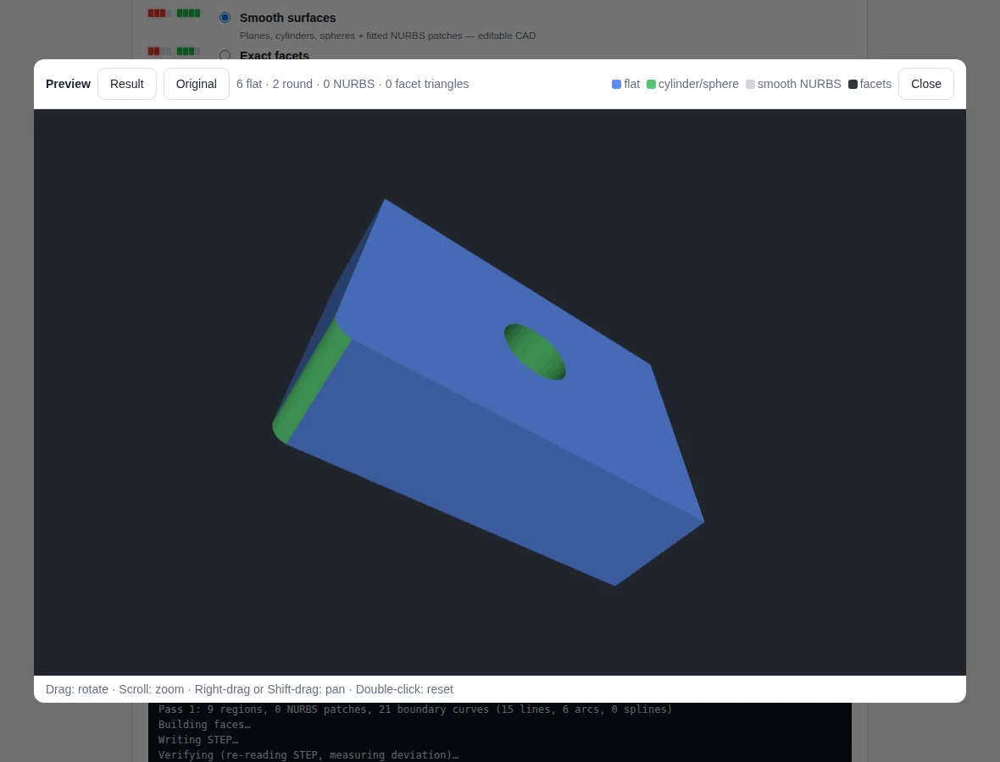
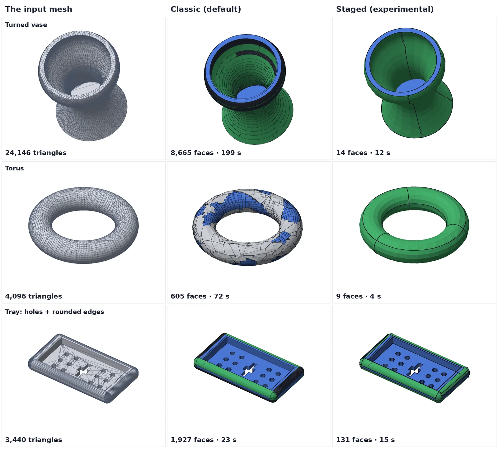
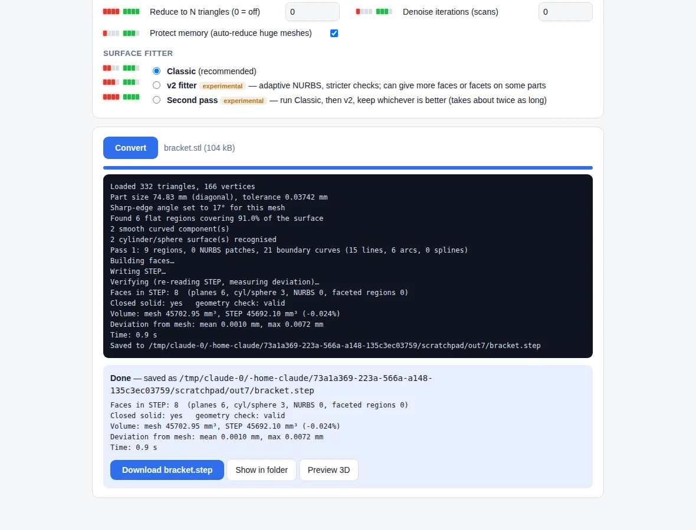
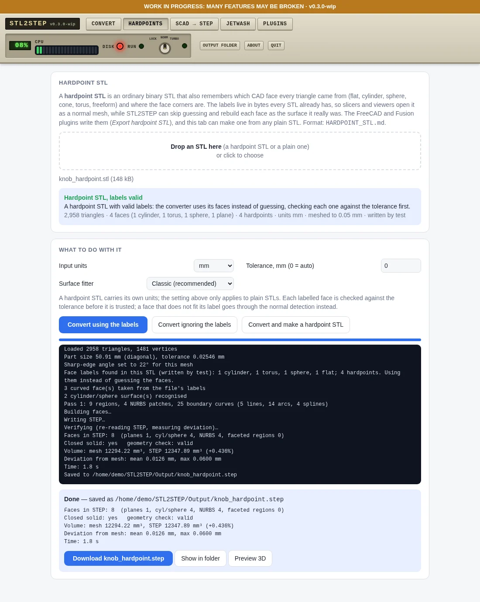
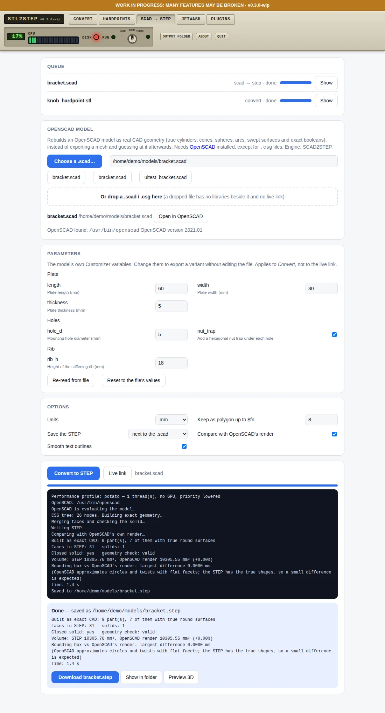
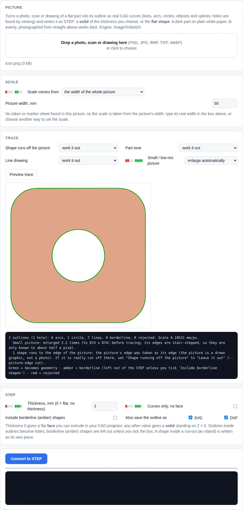
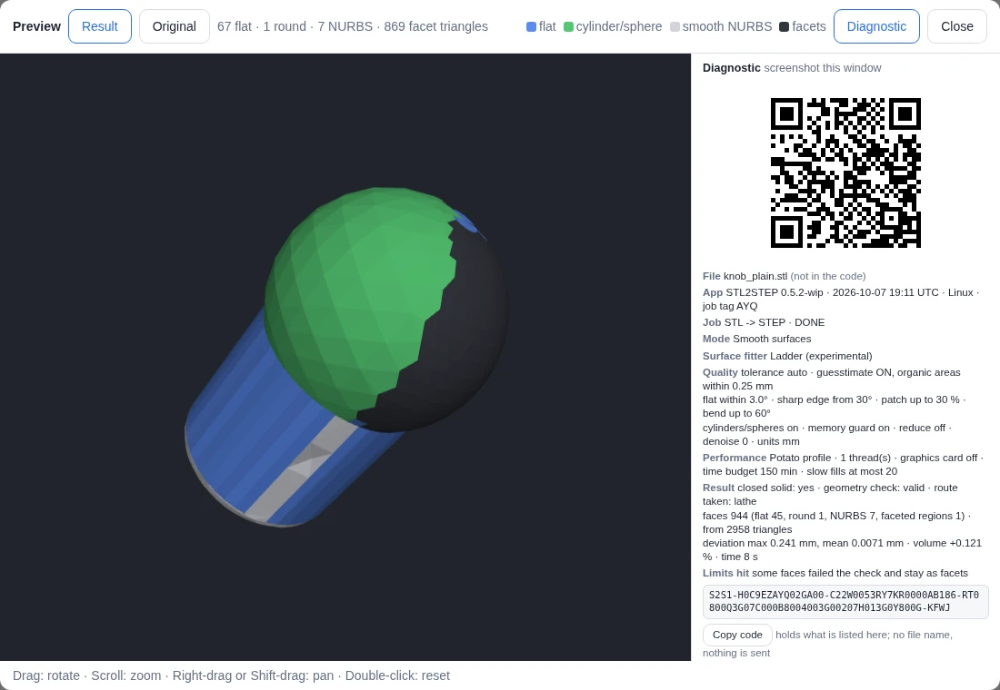
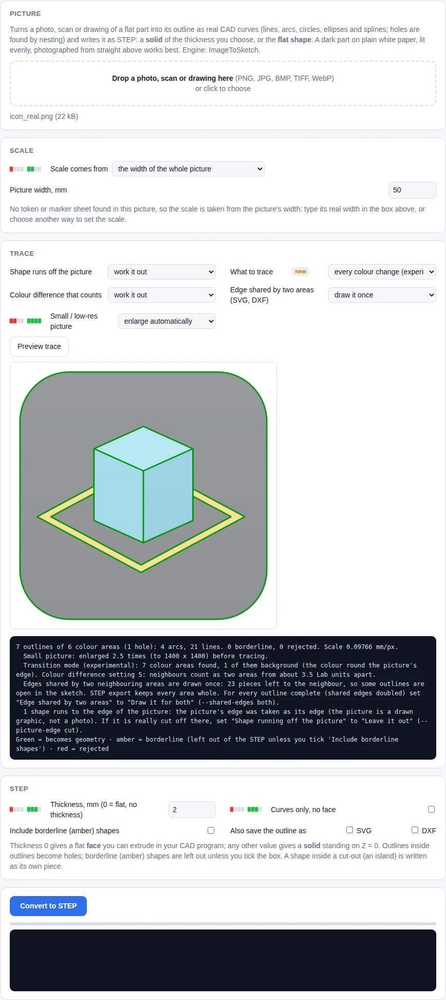
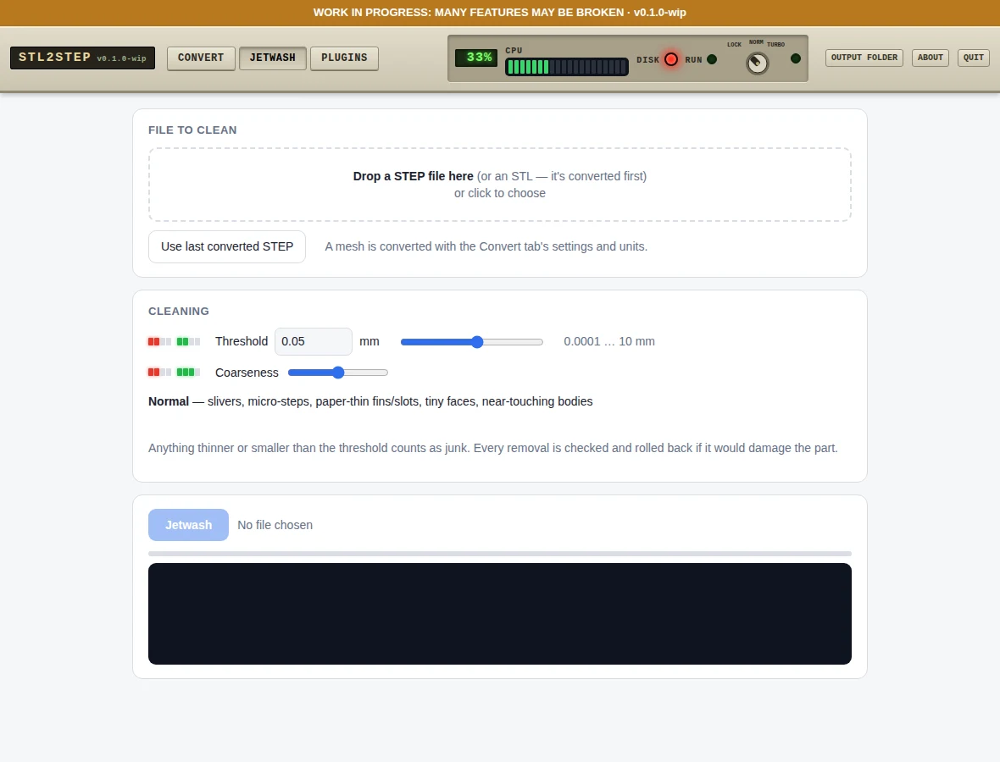

Possibly the most advanced and functional free (for non-commercial use) solid conversion software in the world. Turn STL meshes, hardpoint STL files, OpenSCAD models and photos of flat parts into real STEP solids — true planes, cylinders and spheres, plus fitted NURBS for organic shapes — and jetwash junk out of old STEP files. Portable, offline, runs in your browser.
DownloadSource on GitHub
Flat faces become planes, holes and rounds become cylinders and spheres; organic areas become smooth NURBS patches. Anything that can't be fitted stays as exact facets, so the solid is always closed.
A normal STL that also remembers which CAD face each triangle came from. Open it in the Hardpoints tab and the solid is rebuilt from its real faces instead of guessed: on the test knob 1,103 faces become 8.
Rebuilds an OpenSCAD model as true CAD geometry (cylinders, spheres, exact booleans) instead of a mesh. Customizer fields, 3D preview and a live link that re-exports when you save. Needs OpenSCAD installed.
The preview window shows the job's mode, surface fitter, quality settings and result as a QR code and in plain words. One screenshot is a complete report; run_tostep.py diag reads it back. No file name in it, nothing sent anywhere.
Trace a photo, scan or drawing of a flat part into lines, arcs and splines and save it as STEP, flat or with a thickness. New: a printable calibration sheet and a 3D-printed 50 mm stand that measures the camera distance, for tall parts. A printable scale token (paper or plastic) sets the scale, straightens a tilted photo and takes the part's height out of it. So far measured on simulated photographs only.
Easy things first: the mesh is looked at for a few milliseconds and routed as prismatic, lathe, organic or mixed; exact shapes are claimed before anything slow runs and problem areas are guesstimated or kept as facets. A 24k-triangle vase went from 264 s and 8,980 faces to 8 s and 14 faces on the test machine. Classic stays the default.
An opt-in fitter that finds lathe and extruded shapes first, so turned and round parts come out as a handful of exact faces instead of thousands. Classic stays the default.
Removes slivers, 0.0001 mm steps, thin fins, specks and tiny holes from STEP files, with a threshold and coarseness slider.
A small core and a folder per tool, each described by a manifest. The web page, the command line and the CAD buttons are built from the manifests, so a new tool is a folder, not a rewrite. How to add one.
The promises begin at 1.0.0 and are gated on real runs on a Mac, a Windows PC, FreeCAD and Fusion, which have not happened yet. Until then it is a work in progress with a golden benchmark that stops results getting worse. The policy.
This replaces STL2STEP / EVERYTHING to solid, which is frozen at 0.10.3 as a finished dead end and kept online. What came across and what did not; the old project.
One folder with its own Python. Nothing installed system-wide, nothing uploaded. Mac, Windows, Linux.
One FreeCAD workbench and one Fusion add-in, installed from the Install tab. Both are thin buttons over the same command line, and neither has been run in the real program yet.

Why is turning a mesh into STEP so slow, and why do the results have so many faces? We published a plain-English summary, with pictures, of a research report on exactly that. The short answer: the slow fallbacks are the real cost, so claim the exact shapes (flats, holes, lathe shapes, extrusions) first and only fit the organic rest. Parts of it are already in the toolbox as the experimental Staged and Ladder engines; the rest is a plan, and the open questions are listed so others can help. A second round covers cheap machine vision (mostly: don't render, count normals), how the techniques combine, and easy-things-first with guesstimated leftovers.
Read the research notesFull report with sourcesWritten with AI assistance and not independently verified; check the sources.
Twoo STEP CAD Toolbox (Mac).command, Twoo STEP CAD Toolbox (Windows).bat or twoo-step-cad-toolbox-linux.sh. The first start downloads a private Python and libraries (a few minutes).Taken from 0.10.2, the version this was built from; the pages are generated the same way, but the old Plugins tab is now called Install and the title says Twoo STEP CAD Toolbox.






